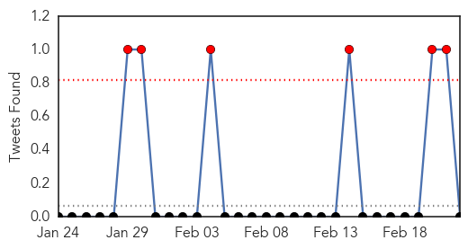

MERS
30-Day Web Trend
11 alerts, 1 warnings

30-Day Twitter Trend
6 alerts, 0 warnings

Article Locations


Article Confidences

Top Articles:
- 0.999
- 385 die of MERS virus in S. Arabia, UN sends investigative team — RT News
- 0.995
- UN Team Investigates Saudi Surge In Cases Of Deadly MERS Virus
- 0.994
- MERS kills 17 since Feb. 11; Buraidah woman latest victim
- 0.986
- Sudan Vision Daily
- 0.965
- UN team investigates surge in MERS cases
- 0.954
- Health Ministry bans visit to camel farms in Middle East countries
- 0.939
- Health Ministry bans visit to camel farms in Middle East countries
Top Tweets:
-
No tweets found for Feb 22, 2015